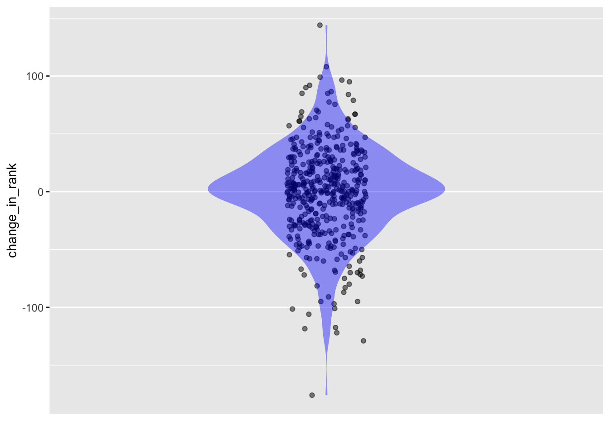
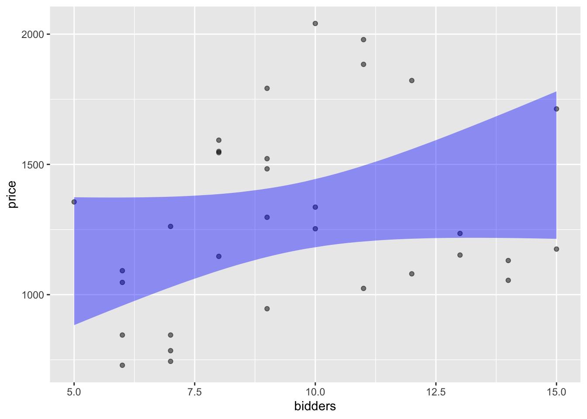
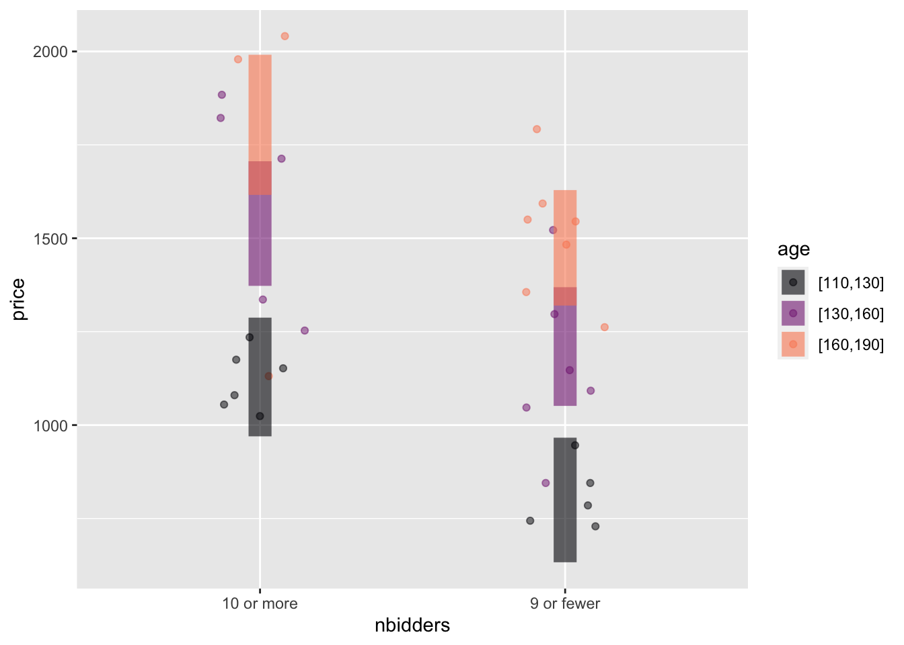
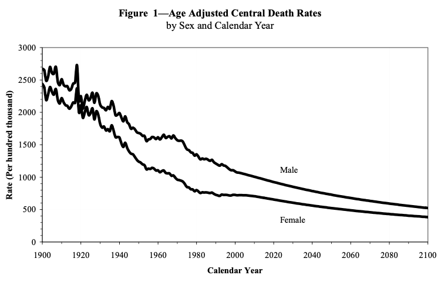

Extended_grades <- Grades |>
left_join(Sessions) |>
left_join(Gradepoint) |>
select(sid, iid, sessionID, gradepoint)12 Adjustment
The phrase “all other things being equal” is a critical qualifier in describing relationships. To illustrate: A simple claim in economics is that a high price for a commodity reduces the demand. For example, increasing the price of gasoline will reduce demand as people avoid unnecessary driving or purchase electric cars. Nevertheless, the claim can be considered obvious only with the qualifier all other things being equal. For instance, the fuel price might have increased because a holiday weekend and the attendant vacation travel has increased the demand for gasoline. Thus, higher gasoline prices may be associated with higher demand unless holding constant other variables such as vacationing.
The Latin equivalent of “all other things being equal” is sometimes used in economics: “ceteris paribus”. The economics claim would be, “higher prices are associated with lower demand, ceteris paribus.”
Although the phrase “all other things being equal” has a logical simplicity, it is impractical to implement “all.” So instead of the blanket “all other things,” it is helpful to consider just “some other things” to be held constant, being explicit about what those things are. Other phrases along the same lines are “adjusting for …,” “taking into account …,” and “controlling for ….”
Groupwise adjustment
“Life expectancy” is a statistical summary familiar to many readers. Life expectancy is often the evidence provided in debates about healthcare policies or environmental conditions. For instance, consider this pull-quote from the Our World in Data website:
| Country | Female | Male |
|---|---|---|
| Japan | 87.6 | 84.5 |
| Spain | 86.2 | 80.3 |
| Canada | 84.7 | 80.6 |
| United States | 80.9 | 76.0 |
| Bolivia | 74.0 | 71.0 |
| Russia | 78.3 | 66.9 |
| North Korea | 75.9 | 67.8 |
| Haiti | 68.7 | 63.3 |
| Nigeria | 63.3 | 59.5 |
| Somalia | 58.1 | 53.4 |
“Americans have a lower life expectancy than people in other rich countries despite paying much more for healthcare.”
The numbers in Table 12.1 faithfully reflect the overall situation in the different countries. Yet, without adjustment, they are not well suited to inform about specific situations. For example, life expectancies are usually calculated separately for males and females, acknowledging a significant association of life expectancy with sex, not just the availability of medical care. We will call such a strategy “groupwise adjustment” because it’s based on acknowledging difference between groups. You’ll see similar groupwise adjustment of life expectancy on the basis of race/ethnicity.
Over many years teaching epidemiology at Macalester College, I asked students to consider life-expectancy tables and make policy suggestions for improving things. Almost always, their primary recommendations involved improving access to health care, especially for the elderly.
But life expectancy is not mainly, or even mostly, about old age. Two critical determinants are infant mortality and lethal activities by males in their late teenage and early adult years. If we want to look at conditions in the elderly, we need to consider elderly people separately, not mixed in with infants, children, and adolescents. For reasons we won’t explain here, with life expectancy calculations it’s routine to calculate a separate “life expectancy at age X” for each age year. Table 12.2 shows, according to the World Health Organization, how many years longer a 70-year old can expect to live. The 30-year difference between Japan and Somalia seen in Table 12.1 is reduced, for 70-year olds, to about a decade. The differences between males and females are similarly reduced
| Country | Female | Male |
|---|---|---|
| Japan | 21.3 | 17.9 |
| Canada | 18.0 | 15.6 |
| Spain | 17.0 | 14.0 |
| United States | 18.3 | 16.3 |
| Russia | 16.2 | 12.2 |
| Bolivia | 13.6 | 13.0 |
| Haiti | 12.9 | 12.1 |
| Somalia | 11.6 | 9.7 |
A picture of adjustment
“Adjustment” is a statistical method for “taking other things into account.” Learning to take other things into account is a basic component in assembling a basket of skills often called “critical thinking.” Speculating what those “other things” should be is a matter of experience and judgment. That is, reasonable people’s opinions may differ.
Labeling a basket as “statistical thinking” does not imply that the contents of the basket are consistent with one another, even if they rightfully belong in the same basket. An example is a critical thinking skill of noting how a person’s conclusion might be rooted in matters of employment or funding or social attitudes. Too often, those unfamiliar with statistical adjustment see it as a mathematical ploy to hide such biases. A particularly nefarious form of identity politics attributes any disagreement to bias. The statistician undertaking a careful and honest adjustment regarding a matter of social controversy should be prepared for ad hominem attacks.
Adjustment with per
The US government’s Centers for Medicare Studies gives some numbers about the age distribution of “personal health-care” spending:
“In 2020, children (0-18) accounted for 23 percent of the population and 10 percent of personal health care (PHC) spending, working age adults (19-64) accounted for 60 percent of the population and 53 percent of PHC, and older adults (65 and older) account for 17 percent of the population and 37 percent of PHC.”
There are a lot of numbers in the above quote. For the purposes of looking at health-care spending as a function of age, we want to take into account the different sizes of the population groups. A per capita adjustment lets us do this:
| Age group | population | spending | index: spending per capita |
|---|---|---|---|
| 0-18 | 23% | 10% | 0.48 |
| 19-64 | 60% | 53% | 0.88 |
| 65+ | 17% | 37% | 2.18 |
The spending-per-capita “index” is simply spending divided by population. This per capita adjustment shows how the different population groups compare.
For a richer example of adjustment using per, let’s return to the example of college grades from Section 7.2. There, we calculated using simple wrangling each student’s grade-point average and an instructor grade-giving average. The instructor’s grade-giving average varies so much that it seems short-sighted to neglect it as a factor in determining a student’s grade in that instructor’s courses.
An adjustment for the instructor can be made by constructing a per-type index. An instructor gave each grade, but instead of considering the grade literally, let’s divide the grade by the grade-giving average of the instructor involved.
We can consider the instructors’ iGPA to calculate an instructor-adjusted GPA for students. We create a data frame with the instructor ID and numerical grade point for every grade in the Grades and Sessions tables. First, we use “joins” to bring together the tables from the database.
| sid | iid | sessionID | gradepoint |
|---|---|---|---|
| S31461 | inst369 | session1871 | 4.00 |
| S31461 | inst375 | session3479 | 4.00 |
| S31905 | inst426 | session2156 | 4.00 |
| S31905 | inst129 | session3489 | NA |
| S31461 | inst410 | session1937 | 4.00 |
| S31440 | inst198 | session3119 | 3.66 |
| S31905 | inst129 | session3489 | NA |
| S31461 | inst317 | session3087 | 4.00 |
| S31440 | inst186 | session2882 | 4.00 |
| S32328 | inst140 | session2344 | 3.66 |
Next, calculate the instructor-by-instructor “grade-giving average” (gga):
Instructors <- Extended_grades |>
summarize(gga = mean(gradepoint, na.rm = TRUE), .by = iid)| iid | gga |
|---|---|
| inst436 | 3.583778 |
| inst170 | 3.625455 |
| inst143 | 3.764328 |
| inst264 | 2.973500 |
| inst268 | 3.062195 |
| inst465 | 3.443158 |
Join the Instructors data frame with Extended_grades to put the grade earned and the average grade given next to one another:
With_instructors <-
Extended_grades |>
left_join(Instructors)| sid | iid | sessionID | gradepoint | gga |
|---|---|---|---|---|
| S31971 | inst436 | session3700 | NA | 3.58 |
| S32229 | inst436 | session3057 | 3.33 | 3.58 |
| S32160 | inst170 | session2488 | 3.00 | 3.63 |
| S31896 | inst170 | session3536 | 3.66 | 3.63 |
| S32475 | inst143 | session2058 | 3.66 | 3.76 |
| S31974 | inst143 | session3193 | 4.00 | 3.76 |
| S31449 | inst264 | session2444 | 3.00 | 2.97 |
| S31917 | inst264 | session2444 | 3.00 | 2.97 |
| S31320 | inst268 | session1905 | 2.00 | 3.06 |
| S32454 | inst268 | session2237 | 2.66 | 3.06 |
| S32004 | inst465 | session3826 | 4.00 | 3.44 |
| S31989 | inst465 | session3797 | 3.66 | 3.44 |
Make the per adjustment by dividing gradepoint by gga to create a grade index. We will then average this index for each student:
Adjusted_gpa <-
With_instructors |>
mutate(index = gradepoint / gga) |>
summarize(grade_index = mean(index, na.rm = TRUE), .by = sid)| sid | grade_index |
|---|---|
| S31905 | 1.140 |
| S31647 | 1.000 |
| S32406 | 0.917 |
| S31548 | 1.060 |
| S31197 | 0.958 |
| S31914 | 1.040 |
| S32028 | 1.050 |
| S31458 | 1.120 |
Does adjusting the grades in this way make a difference? We can compare the index to the raw GPA, calculated in the conventional way.
Raw_gpa <- Extended_grades |>
summarize(gpa = mean(gradepoint, na.rm = TRUE), .by = sid)| sid | gpa |
|---|---|
| S31905 | 3.88 |
| S31647 | 3.57 |
| S32406 | 3.20 |
| S31548 | 3.71 |
| S31197 | 3.33 |
| S31914 | 3.40 |
| S32028 | 3.55 |
| S31458 | 3.97 |
Older readers will be familiar with the notion of “class rank,” whereby all students were ordered from highest to lowest scoring. In this example, since there are 443 students in the class, the rank will run 1, 2, \(\ldots\), 442, 443, from highest score to lowest. To compare the adjusted grade index with the raw GPA, we calculate the rank according to each, then look at the change in each student’s ranking. Figure 12.1 shows, for each of the 443 students, how much adjustment changed the student’s class rank. A value of 50 means that adjustment moved the student up 50 places in rank; a negative value means that adjustment lowered the student’s rank.
Raw_gpa |>
left_join(Adjusted_gpa) |>
mutate(change_in_rank = rank(gpa) - rank(grade_index)) |>
point_plot(change_in_rank ~ 1, annot = "violin")

Individual students are understandably interested how how much their own rank changes due to adjustment. Students whose ranks improve will be enthusiastic about adjustment. Students whose ranks get worse will be unhappy about adjustment. You can expect to hear them challenging the whole idea of adjustment as an obscure and arbitrary technique. Indeed, just showing the adjustment affects class rank is not itself evidence for the utility and appropriateness of adjustment. In Section 12.4, we will be able to address the issue of whether the adjusted grade-point average is more meaningful than the raw GPA.
Adjustment by modeling
We will use the word “adjustment” to name the statistical techniques by which “other things” are considered. Those other things, as they appear in data, are called “covariates.”
There are two phases for adjustment, one requiring careful thought and understanding of the specific system under study, the other—the topic of this Lesson—involving only routine, straightforward calculations.
Phase 1: Choose relevant covariates for adjustment. This almost always involves familiarity with the real-world context. We’ll develop a framework for making choices based on causal connections in Lesson Chapter 24.
Phase 2: Build a model with the covariates from Phase 1 as explanatory variables. In this Lesson, we will look at the model from the perspective of the model values. In later Lessons, we will look at model coefficients to see the consequences of adjustment.
Example: Modeling grades
In Section 12.3, we adjusted college grades by scaling each grade by its instructor’s average grade point (“grade-given average”: gga). Let’s return to that context by taking a different approach to grade adjustment. Our motivation is to incorporate other factors into the adjustment, for instance class size (enroll) and class level. We will also change from the politically unpalatable instructor-based grade-given average to using department (dept) as a covariate.
To start, we point out that the conventional GPA can also be found by modeling: gradepoint by sid. With the model in hand, evaluate the model at each sid. The resulting model value will be the same as was found by simple averaging of each student’s grade points.
Joined_data <- Grades |>
left_join(Sessions) |>
left_join(Gradepoint)
Students <- Grades |> select(sid) |> unique()
Raw_model <-
Joined_data |>
model_train(gradepoint ~ sid)
Raw_gpa <- Raw_model |>
model_eval(Students) |>
select(sid, raw_gpa = .output)| sid | raw_gpa |
|---|---|
| S31905 | 3.88 |
| S31647 | 3.57 |
| S32406 | 3.21 |
| S31548 | 3.71 |
| S31197 | 3.33 |
| S31914 | 3.40 |
| S32028 | 3.55 |
| S31458 | 3.97 |
Although the raw GPA for each student is identical to that found by averaging, with the modeling approach we can add covariates to the model specification. We will adjust using enroll, level, and dept:
Adjustment_model <-
Joined_data |>
model_train(gradepoint ~ sid + enroll + level + dept)To accomplish the adjustment, we will evaluate Adjustment_model at all values of sid, as we did with the Raw_model. But we will also hold constant the enrollment, level, and department by setting their values. For instance, in the following, we look at every student as if their classes were all in department D, at the 200 level, and with an enrollment of 20.
Inputs <- Students |>
mutate(dept = "D", level = 200, enroll = 20)
Model_adjusted_gpa <-
Adjustment_model |>
model_eval(Inputs) |>
rename(modeled_gpa = .output)| sid | dept | level | enroll | modeled_gpa |
|---|---|---|---|---|
| S31905 | D | 200 | 20 | 3.92 |
| S31647 | D | 200 | 20 | 3.53 |
| S32406 | D | 200 | 20 | 3.29 |
| S31548 | D | 200 | 20 | 3.67 |
| S31197 | D | 200 | 20 | 3.41 |
| S31914 | D | 200 | 20 | 3.61 |
| S32028 | D | 200 | 20 | 3.66 |
| S31458 | D | 200 | 20 | 3.96 |
We now have three different versions of the GPA:
- The raw GPA, which we calculated in two equivalent ways, with
summarize(mean(gradepoint), .by = sid)and with the modelgradepoint ~ sid. - The grade-given average used to create an index that involves
gradepoint / gga. - The model using covariates
level,enroll, anddept.
The statistical thinker knows that GPA is a social construction, not a hard-and-fast reality. Let’s see to what extent the different versions agree.
Raw_gpa |>
left_join(Adjusted_gpa) |>
left_join(Model_adjusted_gpa) |>
mutate(raw_vs_adj = rank(raw_gpa) - rank(grade_index),
raw_vs_modeled = rank(raw_gpa) - rank(modeled_gpa),
adj_vs_modeled = rank(grade_index) - rank(modeled_gpa)) |>
select(contains("_vs_")) |>
pivot_longer(cols = contains("_vs_"), names_to = "comparison",
values_to = "change_in_rank") |>
summarize(var(change_in_rank), .by = comparison)| comparison | var(change_in_rank) |
|---|---|
| raw_vs_adj | 2000 |
| raw_vs_modeled | 2000 |
| adj_vs_modeled | 900 |
This is, admittedly, a lot of wrangling. The result is that the two methods of adjustment agree with one another—a smaller variance of the change in rank—much more than the raw GPA agrees with either. This suggests that the adjustment is identifying a genuine pattern rather than merely randomly shifting things around.
Exercises
Exercise 11.1 Q29-4
DRAFT: The SECOND PLOT SHOULD SHOW price ~ bidders with the x-axis used for age. So the model line will be FLAT. Also you did not divide the bidders into two groups.
Here are two graphs of the data from Clock_auction showing the relationship between the winning price and the number of bidders. (I’ve simplified the number of bidders to two categories.) The age of the clock is a covariate. The large dots show the mean age and mean price of the clocks in those auctions with 10 or more bidders versus 9 or fewer bidders.
Code
Clock_auction <- Clock_auction |>
mutate(nbidders = ifelse(bidders >= 10, "10 or more", "9 or fewer"))
Stats <- Clock_auction |>
summarize(mp = mean(price), mage = mean(age),
.by = bidders)Clock_auction |> point_plot(price ~ bidders, annot = "model")
mod1 <- Clock_auction |> model_train(price ~ bidders) Part A. In the model without age as a covariate, what is the difference in mean prices for the 10-or-more-bidders group versus the 9-or-fewer-bidders group?
Part B. Now the picture when including age as a covariate. Adjusting for age, what is the difference in mean prices for the 10-or-more-bidders group versus the 9-or-fewer-bidders group?
Clock_auction |> point_plot(price ~ nbidders + age, annot = "model")
mod2 <- Clock_auction |> model_train(price ~ nbidders + age) Part C. Here are confidence intervals for the two models graphed above. Explain what about these coefficients matches the conclusions you got in Parts (A) and (B)?
mod1 |> conf_interval()| term | .lwr | .coef | .upr |
|---|---|---|---|
| (Intercept) | 486.213201 | 944.05426 | 1401.89531 |
| bidders | -9.208742 | 36.88611 | 82.98096 |
mod2 |> conf_interval()| term | .lwr | .coef | .upr |
|---|---|---|---|
| (Intercept) | -466.657340 | -56.34591 | 353.96551 |
| nbidders9 or fewer | -490.390300 | -336.03927 | -181.68825 |
| age | 7.792403 | 10.63212 | 13.47184 |
Exercise 11.2 Q12-104
Participation-adjusted school performance. Something is not working here. You’ll need to take spending into account
SAT |> model_train(sat ~ frac + expend) |> conf_interval()| term | .lwr | .coef | .upr |
|---|---|---|---|
| (Intercept) | 949.908859 | 993.831659 | 1037.754459 |
| frac | -3.283679 | -2.850929 | -2.418179 |
| expend | 3.788291 | 12.286518 | 20.784746 |
SAT |> select(state, sat, frac, expend) |>
mutate(adj_sat = sat - 0.00297*(50-frac) + 0.0127*(6 - expend))| state | sat | frac | expend | adj_sat |
|---|---|---|---|---|
| Alabama | 1029 | 8 | 4.405 | 1028.8955 |
| Alaska | 934 | 47 | 8.963 | 933.9535 |
| Arizona | 944 | 27 | 4.778 | 943.9472 |
| Arkansas | 1005 | 6 | 4.459 | 1004.8889 |
| California | 902 | 45 | 4.992 | 901.9980 |
| Colorado | 980 | 29 | 5.443 | 979.9447 |
| Connecticut | 908 | 81 | 8.817 | 908.0563 |
| Delaware | 897 | 68 | 7.030 | 897.0404 |
| Florida | 889 | 48 | 5.718 | 888.9976 |
| Georgia | 854 | 65 | 5.193 | 854.0548 |
| Hawaii | 889 | 57 | 6.078 | 889.0198 |
| Idaho | 979 | 15 | 4.210 | 978.9188 |
| Illinois | 1048 | 13 | 6.136 | 1047.8884 |
| Indiana | 882 | 58 | 5.826 | 882.0260 |
| Iowa | 1099 | 5 | 5.483 | 1098.8729 |
| Kansas | 1060 | 9 | 5.817 | 1059.8806 |
| Kentucky | 999 | 11 | 5.217 | 998.8941 |
| Louisiana | 1021 | 9 | 4.761 | 1020.8940 |
| Maine | 896 | 68 | 6.428 | 896.0480 |
| Maryland | 909 | 64 | 7.245 | 909.0258 |
| Massachusetts | 907 | 80 | 7.287 | 907.0728 |
| Michigan | 1033 | 11 | 6.994 | 1032.8715 |
| Minnesota | 1085 | 9 | 6.000 | 1084.8782 |
| Mississippi | 1036 | 4 | 4.080 | 1035.8878 |
| Missouri | 1045 | 9 | 5.383 | 1044.8861 |
| Montana | 1009 | 21 | 5.692 | 1008.9178 |
| Nebraska | 1050 | 9 | 5.935 | 1049.8791 |
| Nevada | 917 | 30 | 5.160 | 916.9513 |
| New Hampshire | 935 | 70 | 5.859 | 935.0612 |
| New Jersey | 898 | 70 | 9.774 | 898.0115 |
| New Mexico | 1015 | 11 | 4.586 | 1014.9021 |
| New York | 892 | 74 | 9.623 | 892.0253 |
| North Carolina | 865 | 60 | 5.077 | 865.0414 |
| North Dakota | 1107 | 5 | 4.775 | 1106.8819 |
| Ohio | 975 | 23 | 6.162 | 974.9178 |
| Oklahoma | 1027 | 9 | 4.845 | 1026.8929 |
| Oregon | 947 | 51 | 6.436 | 946.9974 |
| Pennsylvania | 880 | 70 | 7.109 | 880.0453 |
| Rhode Island | 888 | 70 | 7.469 | 888.0407 |
| South Carolina | 844 | 58 | 4.797 | 844.0390 |
| South Dakota | 1068 | 5 | 4.775 | 1067.8819 |
| Tennessee | 1040 | 12 | 4.388 | 1039.9076 |
| Texas | 893 | 47 | 5.222 | 893.0010 |
| Utah | 1076 | 4 | 3.656 | 1075.8931 |
| Vermont | 901 | 68 | 6.750 | 901.0439 |
| Virginia | 896 | 65 | 5.327 | 896.0531 |
| Washington | 937 | 48 | 5.906 | 936.9953 |
| West Virginia | 932 | 17 | 6.107 | 931.9006 |
| Wisconsin | 1073 | 9 | 6.930 | 1072.8664 |
| Wyoming | 1001 | 10 | 6.160 | 1000.8792 |
Examples of adjustment using the method described at the end of the last section.
::: {.callout-note collapse=“true”} ## Exercise 11.3 adjustment-Whickham-age
Draft Exercises
Exercise 11.4 Q12-102
Age adjustment in Whickham.
Exercise 11.5 Q12-103
Knives and forks example from p. 147 in Milo’s book.
Class activity
Exercise 11.6 Q12-301
See rural vs. urban mortality rates at https://jamanetwork.com/journals/jama/fullarticle/2780628
From Google: According to a 2021 National Center for Health Statistics (NCHS) data brief, Trends in Death Rates in Urban and Rural Areas: United States, 1999–2019, the age-adjusted death rate in rural areas was 7% higher than that of urban areas, and by 2019 rural areas had a 20% higher death rate than urban areas. https://www.ruralhealthinfo.org/topics/rural-health-disparities#:~:text=According%20to%20a%202021%20National,death%20rate%20than%20urban%20areas.
Adjusting for age
“Life tables” are compiled by governments from death certificates.
LTraw <- readr::read_csv("www/life-table-raw.csv")Rows: 120 Columns: 7
── Column specification ────────────────────────────────────────────────────────
Delimiter: ","
dbl (7): age, male, mnum, mlife_exp, female, fnum, flife_exp
ℹ Use `spec()` to retrieve the full column specification for this data.
ℹ Specify the column types or set `show_col_types = FALSE` to quiet this message.head(LTraw)| age | male | mnum | mlife_exp | female | fnum | flife_exp |
|---|---|---|---|---|---|---|
| 0 | 0.005837 | 100000 | 74.12 | 0.004907 | 100000 | 79.78 |
| 1 | 0.000410 | 99416 | 73.55 | 0.000316 | 99509 | 79.17 |
| 2 | 0.000254 | 99376 | 72.58 | 0.000196 | 99478 | 78.19 |
| 3 | 0.000207 | 99350 | 71.60 | 0.000160 | 99458 | 77.21 |
| 4 | 0.000167 | 99330 | 70.62 | 0.000129 | 99442 | 76.22 |
| 5 | 0.000141 | 99313 | 69.63 | 0.000109 | 99430 | 75.23 |
Wrangling to a more convenient format (for our purposes):
LT <- tidyr::pivot_longer(LTraw |> select(age, male, female), c("male", "female"), names_to="sex", values_to="mortality")
LT| age | sex | mortality |
|---|---|---|
| 0 | male | 0.005837 |
| 0 | female | 0.004907 |
| 1 | male | 0.000410 |
| 1 | female | 0.000316 |
| 2 | male | 0.000254 |
| 2 | female | 0.000196 |
| 3 | male | 0.000207 |
| 3 | female | 0.000160 |
| 4 | male | 0.000167 |
| 4 | female | 0.000129 |
| 5 | male | 0.000141 |
| 5 | female | 0.000109 |
| 6 | male | 0.000123 |
| 6 | female | 0.000100 |
| 7 | male | 0.000113 |
| 7 | female | 0.000096 |
| 8 | male | 0.000108 |
| 8 | female | 0.000092 |
| 9 | male | 0.000114 |
| 9 | female | 0.000089 |
| 10 | male | 0.000127 |
| 10 | female | 0.000092 |
| 11 | male | 0.000146 |
| 11 | female | 0.000104 |
| 12 | male | 0.000174 |
| 12 | female | 0.000123 |
| 13 | male | 0.000228 |
| 13 | female | 0.000145 |
| 14 | male | 0.000312 |
| 14 | female | 0.000173 |
| 15 | male | 0.000435 |
| 15 | female | 0.000210 |
| 16 | male | 0.000604 |
| 16 | female | 0.000257 |
| 17 | male | 0.000814 |
| 17 | female | 0.000314 |
| 18 | male | 0.001051 |
| 18 | female | 0.000384 |
| 19 | male | 0.001250 |
| 19 | female | 0.000440 |
| 20 | male | 0.001398 |
| 20 | female | 0.000485 |
| 21 | male | 0.001524 |
| 21 | female | 0.000533 |
| 22 | male | 0.001612 |
| 22 | female | 0.000574 |
| 23 | male | 0.001682 |
| 23 | female | 0.000617 |
| 24 | male | 0.001747 |
| 24 | female | 0.000655 |
| 25 | male | 0.001812 |
| 25 | female | 0.000700 |
| 26 | male | 0.001884 |
| 26 | female | 0.000743 |
| 27 | male | 0.001974 |
| 27 | female | 0.000796 |
| 28 | male | 0.002070 |
| 28 | female | 0.000851 |
| 29 | male | 0.002172 |
| 29 | female | 0.000914 |
| 30 | male | 0.002275 |
| 30 | female | 0.000976 |
| 31 | male | 0.002368 |
| 31 | female | 0.001041 |
| 32 | male | 0.002441 |
| 32 | female | 0.001118 |
| 33 | male | 0.002517 |
| 33 | female | 0.001186 |
| 34 | male | 0.002590 |
| 34 | female | 0.001241 |
| 35 | male | 0.002673 |
| 35 | female | 0.001306 |
| 36 | male | 0.002791 |
| 36 | female | 0.001386 |
| 37 | male | 0.002923 |
| 37 | female | 0.001472 |
| 38 | male | 0.003054 |
| 38 | female | 0.001549 |
| 39 | male | 0.003207 |
| 39 | female | 0.001637 |
| 40 | male | 0.003333 |
| 40 | female | 0.001735 |
| 41 | male | 0.003464 |
| 41 | female | 0.001850 |
| 42 | male | 0.003587 |
| 42 | female | 0.001950 |
| 43 | male | 0.003735 |
| 43 | female | 0.002072 |
| 44 | male | 0.003911 |
| 44 | female | 0.002217 |
| 45 | male | 0.004137 |
| 45 | female | 0.002383 |
| 46 | male | 0.004452 |
| 46 | female | 0.002573 |
| 47 | male | 0.004823 |
| 47 | female | 0.002777 |
| 48 | male | 0.005214 |
| 48 | female | 0.002984 |
| 49 | male | 0.005594 |
| 49 | female | 0.003210 |
| 50 | male | 0.005998 |
| 50 | female | 0.003476 |
| 51 | male | 0.006500 |
| 51 | female | 0.003793 |
| 52 | male | 0.007081 |
| 52 | female | 0.004136 |
| 53 | male | 0.007711 |
| 53 | female | 0.004495 |
| 54 | male | 0.008394 |
| 54 | female | 0.004870 |
| 55 | male | 0.009109 |
| 55 | female | 0.005261 |
| 56 | male | 0.009881 |
| 56 | female | 0.005714 |
| 57 | male | 0.010687 |
| 57 | female | 0.006227 |
| 58 | male | 0.011566 |
| 58 | female | 0.006752 |
| 59 | male | 0.012497 |
| 59 | female | 0.007327 |
| 60 | male | 0.013485 |
| 60 | female | 0.007926 |
| 61 | male | 0.014595 |
| 61 | female | 0.008544 |
| 62 | male | 0.015702 |
| 62 | female | 0.009173 |
| 63 | male | 0.016836 |
| 63 | female | 0.009841 |
| 64 | male | 0.017908 |
| 64 | female | 0.010529 |
| 65 | male | 0.018943 |
| 65 | female | 0.011265 |
| 66 | male | 0.020103 |
| 66 | female | 0.012069 |
| 67 | male | 0.021345 |
| 67 | female | 0.012988 |
| 68 | male | 0.022750 |
| 68 | female | 0.014032 |
| 69 | male | 0.024325 |
| 69 | female | 0.015217 |
| 70 | male | 0.026137 |
| 70 | female | 0.016634 |
| 71 | male | 0.028125 |
| 71 | female | 0.018294 |
| 72 | male | 0.030438 |
| 72 | female | 0.020175 |
| 73 | male | 0.033249 |
| 73 | female | 0.022321 |
| 74 | male | 0.036975 |
| 74 | female | 0.025030 |
| 75 | male | 0.040633 |
| 75 | female | 0.027715 |
| 76 | male | 0.044710 |
| 76 | female | 0.030631 |
| 77 | male | 0.049152 |
| 77 | female | 0.033900 |
| 78 | male | 0.054265 |
| 78 | female | 0.037831 |
| 79 | male | 0.059658 |
| 79 | female | 0.042249 |
| 80 | male | 0.065568 |
| 80 | female | 0.047148 |
| 81 | male | 0.072130 |
| 81 | female | 0.052545 |
| 82 | male | 0.079691 |
| 82 | female | 0.058685 |
| 83 | male | 0.088578 |
| 83 | female | 0.065807 |
| 84 | male | 0.098388 |
| 84 | female | 0.074052 |
| 85 | male | 0.109139 |
| 85 | female | 0.083403 |
| 86 | male | 0.120765 |
| 86 | female | 0.093798 |
| 87 | male | 0.133763 |
| 87 | female | 0.104958 |
| 88 | male | 0.148370 |
| 88 | female | 0.117435 |
| 89 | male | 0.164535 |
| 89 | female | 0.131540 |
| 90 | male | 0.182632 |
| 90 | female | 0.146985 |
| 91 | male | 0.202773 |
| 91 | female | 0.163592 |
| 92 | male | 0.223707 |
| 92 | female | 0.181562 |
| 93 | male | 0.245124 |
| 93 | female | 0.200724 |
| 94 | male | 0.266933 |
| 94 | female | 0.219958 |
| 95 | male | 0.288602 |
| 95 | female | 0.239460 |
| 96 | male | 0.309781 |
| 96 | female | 0.258975 |
| 97 | male | 0.330099 |
| 97 | female | 0.278225 |
| 98 | male | 0.349177 |
| 98 | female | 0.296912 |
| 99 | male | 0.366635 |
| 99 | female | 0.314727 |
| 100 | male | 0.384967 |
| 100 | female | 0.333610 |
| 101 | male | 0.404215 |
| 101 | female | 0.353627 |
| 102 | male | 0.424426 |
| 102 | female | 0.374844 |
| 103 | male | 0.445648 |
| 103 | female | 0.397335 |
| 104 | male | 0.467930 |
| 104 | female | 0.421175 |
| 105 | male | 0.491326 |
| 105 | female | 0.446446 |
| 106 | male | 0.515893 |
| 106 | female | 0.473232 |
| 107 | male | 0.541687 |
| 107 | female | 0.501626 |
| 108 | male | 0.568772 |
| 108 | female | 0.531724 |
| 109 | male | 0.597210 |
| 109 | female | 0.563627 |
| 110 | male | 0.627071 |
| 110 | female | 0.597445 |
| 111 | male | 0.658424 |
| 111 | female | 0.633292 |
| 112 | male | 0.691346 |
| 112 | female | 0.671289 |
| 113 | male | 0.725913 |
| 113 | female | 0.711567 |
| 114 | male | 0.762209 |
| 114 | female | 0.754261 |
| 115 | male | 0.800319 |
| 115 | female | 0.799516 |
| 116 | male | 0.840335 |
| 116 | female | 0.840335 |
| 117 | male | 0.882352 |
| 117 | female | 0.882352 |
| 118 | male | 0.926469 |
| 118 | female | 0.926469 |
| 119 | male | 0.972793 |
| 119 | female | 0.972793 |
Questions:
- When were people aged 35-39 in 1972 born? Why are there so few of them?
- How old would you have to be in 1972 to be part of the “baby boom?” Can you see the echo of the baby boom in 2021?
- How many 85+ year-olds will there be in 2040?
The raw data:
Code
Pop2020 <- readr::read_csv("www/nc-est2021-agesex-res.csv",
show_col_types=FALSE) |>
filter(SEX > 0, AGE<999) |>
mutate(sex = ifelse(SEX==1, "female", "male"),
age=AGE, pop=ESTIMATESBASE2020) |>
select(age, sex, pop)Pop2020 |> tail()| age | sex | pop |
|---|---|---|
| 95 | male | 132299 |
| 96 | male | 105435 |
| 97 | male | 79773 |
| 98 | male | 57655 |
| 99 | male | 43072 |
| 100 | male | 78474 |
US mortality at actual age distribution involves joining the data from these two data frames.
Overall <- Pop2020 |> left_join(LT)Joining with `by = join_by(age, sex)`head(Overall)| age | sex | pop | mortality |
|---|---|---|---|
| 0 | female | 1907982 | 0.004907 |
| 1 | female | 1928926 | 0.000316 |
| 2 | female | 1980392 | 0.000196 |
| 3 | female | 2028781 | 0.000160 |
| 4 | female | 2068682 | 0.000129 |
| 5 | female | 2081588 | 0.000109 |
The calculation is simple wrangling:
Overall |>
summarize(mortality = 100000*sum(pop*mortality)/sum(pop),
.by = sex)| sex | mortality |
|---|---|
| female | 708.1769 |
| male | 1351.4683 |
US mortality at WHO standard age distribution:
Standard <- tibble(
age = 0:99,
pop = popfun(age)
)
Overall <- Standard |> left_join(LT)
Overall |>
summarize(mortality = 100000*sum(pop*mortality)/sum(pop),
.by = sex)Age-adjusted death rates over time
From the SSA (p. 15)

Short projects
Exercise 11.7 Q12-201
MAKE AN EASY EXERCISE OUT OF THIS. NOTE THAT THE PRESENTATION OF THE AGE DISTRIBUTION IS MUCH LIKE A VIOLIN PLot.
Maybe ask what’s happening at the top of the pyramid: Is the sharp decline in population owing to death rates, or is it the passage of the teenage hump from 1972 through 50 years of aging.
The World Health Organization standard population
There is much to be learned by comparing health statistics in different countries. For example, in comparing countries with the same level of income, etc., the country with the best health statistics might have useful examples for public policy. Of course, meaningful health statistics should be adjusted for age. Adjustment is done by reference to a “standard population.” Figure 12.2 shows the World Health Organizations standard population. Following the pattern observed in most of the world, younger people predominate. A similar pattern was seen in the US many decades ago, but the US population has changed dramatically and now includes roughly equal numbers of people over a wide span of ages. Even so, the WHO standard population is valuable for comparing US health statistics to those in other countries that have a different age distribution.
NEED TO FIX THE FOLLOWING CHUNK
Comparing the World Health Organization’s standard population to the US population in 1972 and 2021. Females are shown in blue, males in green.